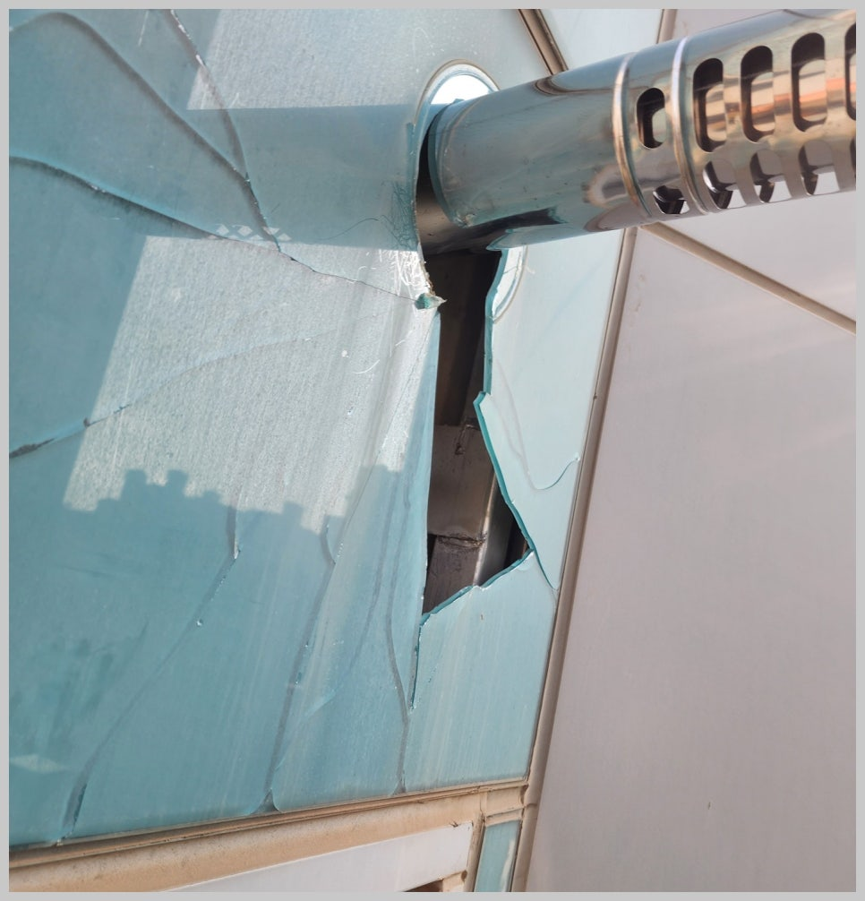
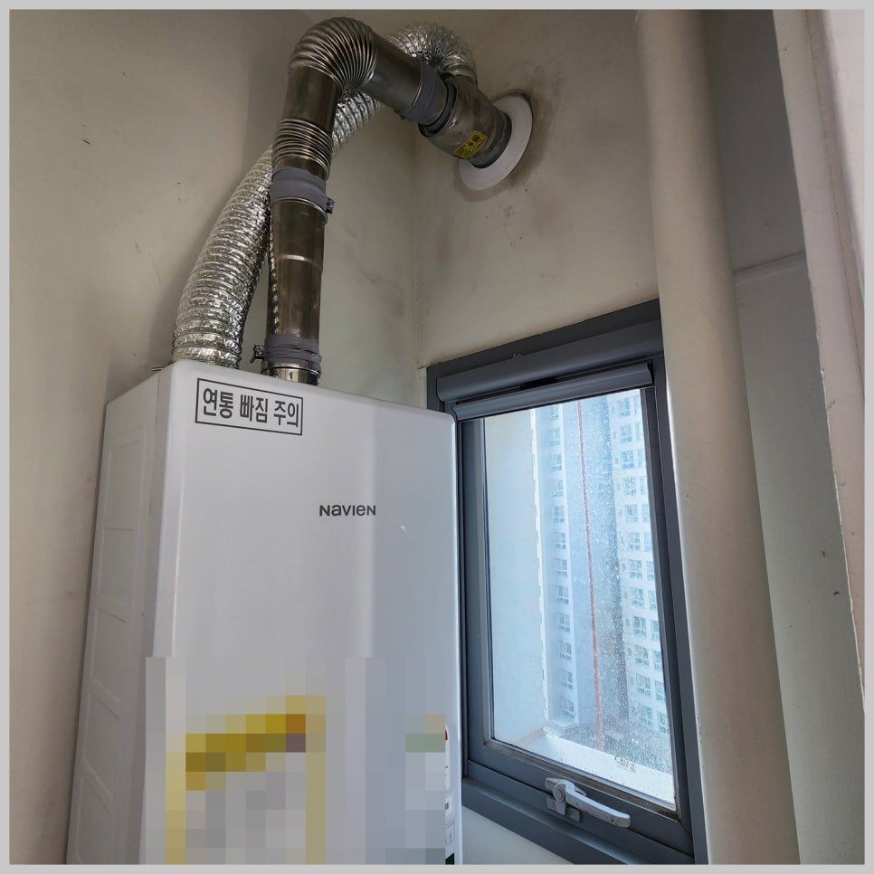
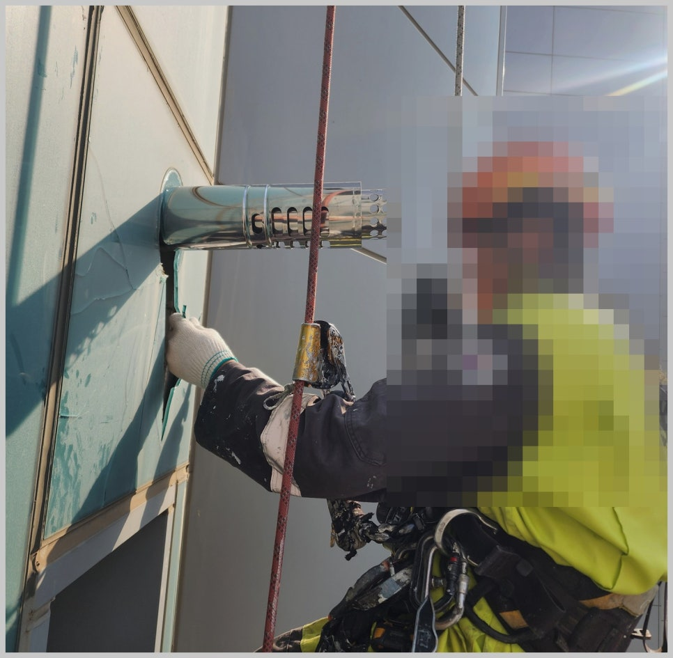

컬러유리는 판 하나만 색이 달라도 멀리서 눈에 띄어서, 깨진 한 장을 갈 때도 색부터 맞춰야 합니다. 서울 성동구의 한 고층 아파트에서 보일러실 창 바깥쪽 청록색 판이 깨졌는데 집 안에서는 손이 닿지 않는다는 연락을 받았습니다. 배기관이 그 판 한가운데를 지나고 있어서, 구멍 자리까지 맞춘 새 판을 주문해 바깥에서 갈아 끼웠습니다.
한눈에 보기
| 작업 | 보일러실 바깥 외벽 컬러유리 1장 교체(배기관 구멍 가공 포함) |
|---|---|
| 지역 | 서울 성동구(왕십리) |
| 장소 | 고층 아파트 보일러실 창 바깥쪽 벽면 |
| 유리 | 기존과 같은 계열 청록색 8T(8mm) 1장 |
| 방법 | 옥상에 줄을 고정하고 내려와 바깥에서 떼고 끼우는 로프 작업 |
| 일정 | 오후 2시 20분쯤 깨진 판 철거, 저녁 6시가 넘어 새 판 마감(같은 날) |



왜 집 안에서는 못 갈고 달비계작업으로 바꿨나요?
보일러실 창을 열어도 깨진 판은 창틀보다 바깥 벽면에 붙어 있어 팔을 내밀어 사진을 찍는 것이 고작이었습니다. 이런 판은 바깥 면에서 실리콘과 고정 부속으로 잡혀 있어 실내에서 밀어 뺄 수 없고, 금 간 판을 무리하게 당기면 조각이 아래로 떨어질 수 있습니다.
사다리차는 닿는 높이에 한계가 있고 높은 층은 차를 세울 자리도 마땅하지 않아, 옥상에 줄을 묶고 기사님이 매달려 내려와 작업했습니다. 그동안 아래로는 사람이 지나가지 않게 막아 두었습니다.
배기관이 지나는 자리, 유리타공은 어떻게 맞추나요?
금은 배기관이 빠져나오는 둥근 구멍 바로 옆에서 시작해 아래쪽으로 크게 벌어졌고, 조각 하나는 이미 빠져 있었습니다. 구멍 둘레는 판에서 가장 약한 곳입니다. 뜨거운 배기에 한쪽만 데워졌다 식기를 되풀이하거나 바람에 흔들린 관이 가장자리를 건드릴 수 있는데, 이번 원인이 어느 쪽인지는 단정할 수 없습니다.
그래서 새 판은 크기와 함께 배기관 중심이 판 모서리에서 가로·세로로 얼마나 떨어져 있는지도 잽니다. 구멍은 관보다 넉넉하게 내서 관과 유리가 직접 맞닿지 않게 합니다.
이 현장 작업 순서
- 보일러실 창 밖으로 휴대폰을 내밀어 깨진 판을 찍고, 사다리로 위쪽 상태를 살폈습니다.
- 안쪽에서 보일러 주름관이 벽을 지나 바깥 판으로 빠지는 자리를 확인했습니다.
- 기존 판과 같은 청록 계열 8mm로, 배기관 자리에 구멍을 낸 새 판을 주문했습니다.
- 오후 2시 20분쯤 줄을 타고 내려가 배기관 둘레에 남은 조각을 하나씩 떼어 냈습니다.
- 해가 진 뒤 새 판을 끼우고 마감했습니다.
컬러유리 교체 비용은 무엇에 따라 달라지나요?
판 한 장 값보다 그 자리까지 가는 방법이 더 크게 좌우합니다. 몇 층을 내려가야 하는지, 옥상에 줄을 묶을 곳이 있는지에 따라 인원과 시간이 바뀝니다.
관이 지나는 구멍이 있으면 가공이 한 단계 더 붙고, 컬러유리는 색을 맞춰 따로 만드는 판이라 제작에 며칠이 더 걸릴 수 있습니다. 그래서 높이와 판 상태를 사진으로 먼저 보고 안내해 드립니다.
자주 묻는 질문
- Q. 새로 끼운 판 색이 기존 판과 똑같나요?
- 깨진 조각이나 옆의 성한 판을 가까이 찍은 사진으로 색을 확인하고 같은 계열로 주문합니다. 다만 오래 햇빛을 받은 기존 판과 갓 만든 판은 처음에 조금 달라 보일 수 있어서, 주문 전에 미리 말씀드립니다.
- Q. 바깥 판 크기를 잴 수 없으면 어떻게 하나요?
- 안쪽 창 크기만 알려 주셔도 됩니다. 몇 층인지 함께 적어 주시면 바깥 작업이 필요한지 바로 가늠할 수 있습니다.